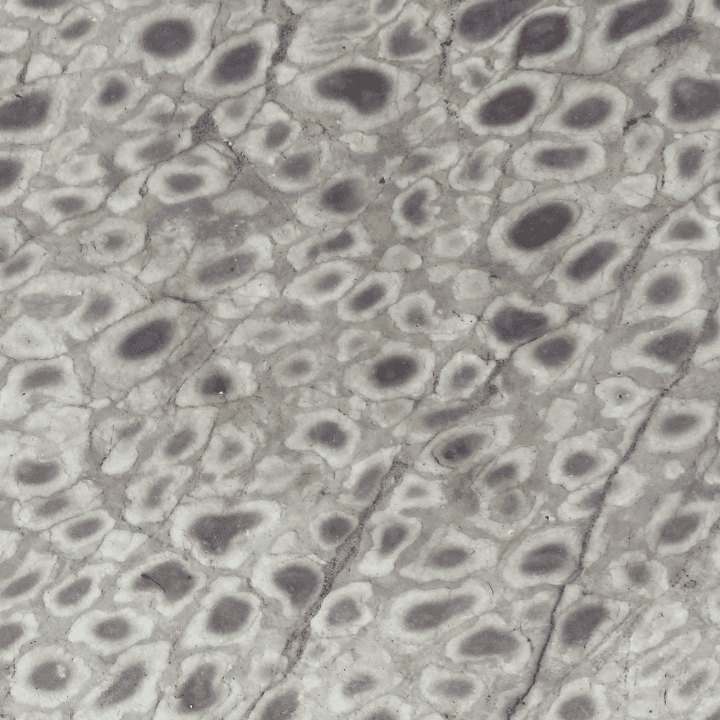
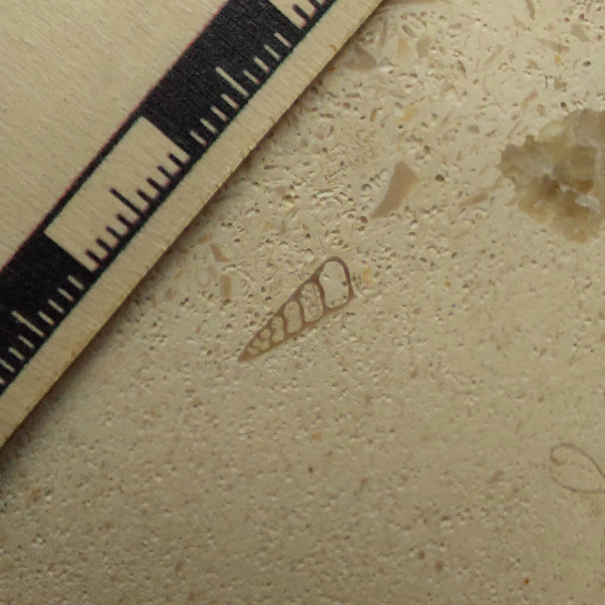
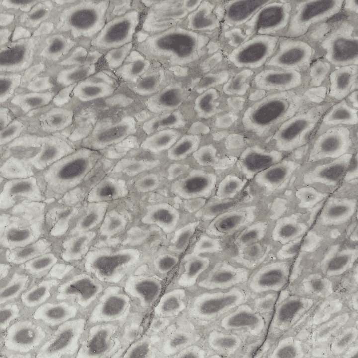
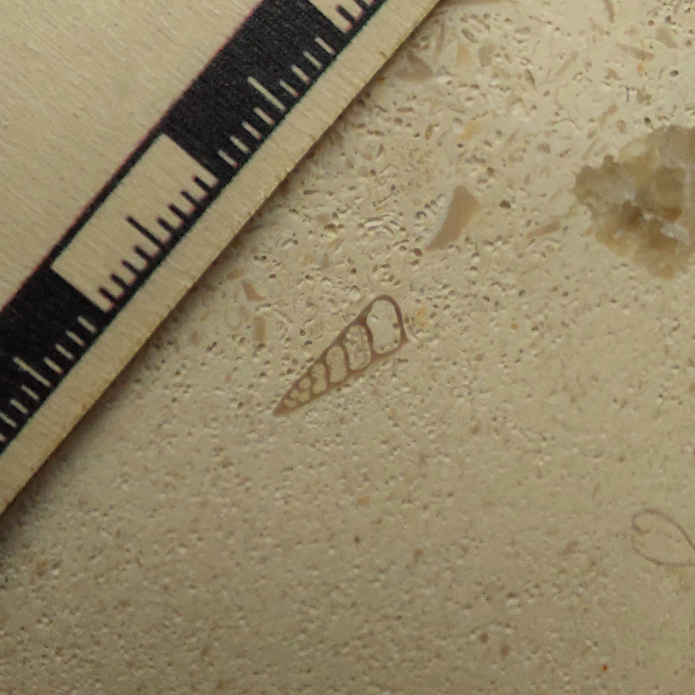

Beatriz Marinho Hörmanseder
Paleontóloga, Divulgadora Científica e Artista 3D, identificando-se como pessoa Não-Binária (pronomes: ela/dela). Produz conteúdo acessível sobre Biologia e Paleontologia nas redes sociais. Desenvolve pesquisas em paleobiologia de vertebrados extintos com foco em metodologias tridimensionais aplicadas à digitalização, retrodeformação e preservação digital de fósseis. Como artista 3D, digitaliza e modela espécimes cientificamente acurados para fins acadêmicos, didáticos e artísticos, promovendo o diálogo entre ciência e arte.


Formação Acadêmica
- Doutora em Ciências Biológicas - Biologia Animal (UFES).
- Mestre em Geociências - Patrimônio Geopaleontológico (MN/UFRJ).
- Bacharel em Ciências Biológicas (UNIRIO).
Laboratórios Associados
Projetos atuais
Série dedicada a contar, de forma acessível, a história da vida na Terra. Da formação do planeta as condições que permitiram o surgimento dos primeiros organismos. Dividida em episódios curtos, objetiva explicar cada etapa dessa trajetória.
 



Projeto dedicado a mapear e divulgar os fósseis encontrados em Belo Horizonte, revelando como elementos do passado geológico aparecem no cotidiano da cidade. A proposta é contar a história desses materiais, explicar sua importância científica e aproximar a população das geociências por meio de conteúdo acessível e visual.